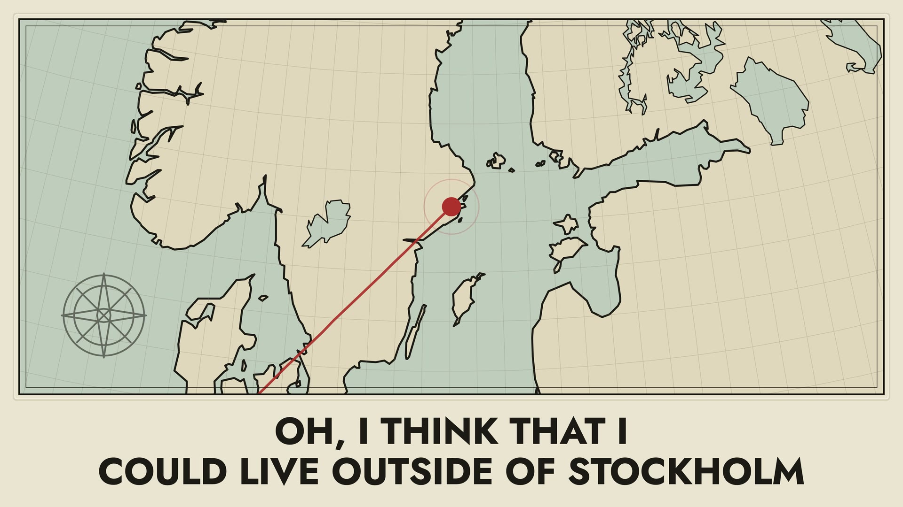
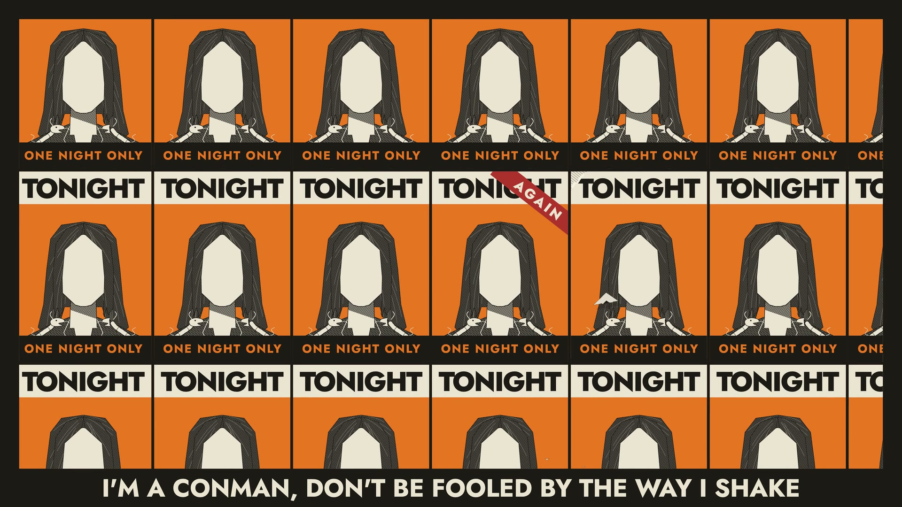
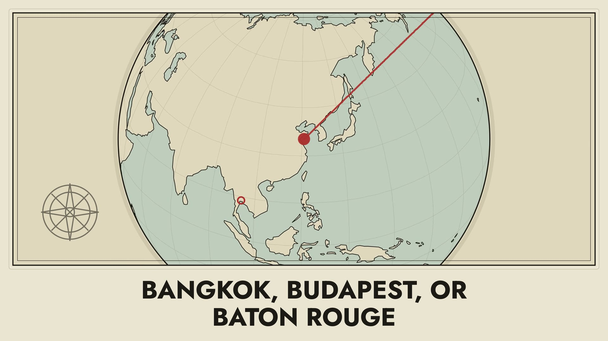

The first record · 2025
I Want to Be Yours and Other Songs
The album film · in progressInto the Wild represents the true beginning of the Havre De Grace project. The songs were selected, organized, and produced to be listened to as a whole body of work. The album explores what music means to the artist and the listener: adventure, creativity, self-identity, and a medium for working through big emotions.


They say love when lost upon the rocks is best left burning out the coals
3:35Some nights the darkness is sweeter than others
3:40I drove by my hometown today
3:48Oh, away with the land and away with the light
4:16The city burns and I’m a ghost
3:19